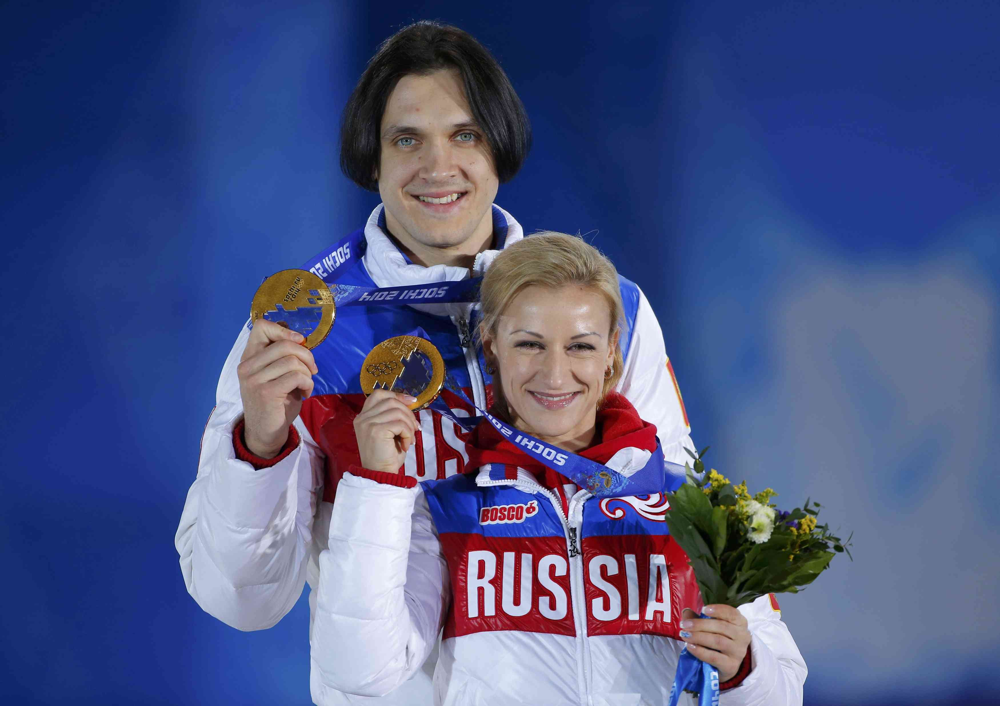

Фигурное катание(парное катание)
Победители: Татьяна Волосожар и Максим Траньков (парное катание)
Татьяна Волосожар и Максим Траньков стали двукратными олимпийскими чемпионами в Сочи, выиграв турнир и в парном катании. С учетом короткой программы они набрали 236,86 балла (84,17 + 152,69). Еще одни представители России – Ксения Столбова и Федор Климов (218,68) – стали серебряными призерами Игр-2014.